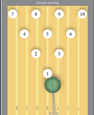
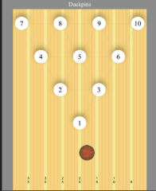
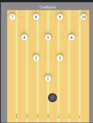
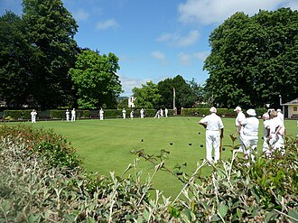

Introduction About Bowling
Bowling is a recreational activity that most commoonly involves rolling a bowling ball to knock down objects to score points.
There are actually many types of bowling with the one we are most familiar with being pin bowling where players have to knock down a total of 10 pins in 10 rounds
In pin bowling, specifically tenpin bowling, players would roll their bowling ball on a smooth surface called a lane to knock down the 10 pins
Players are given 2 chances/rolls to knock down all the pins on each turn.
Players would recieve a Strike when they knock down all 10 pins with a single ball, or a spare when they knock down all 10 pins with 2 balls
Bowling is played by over 120 million people in more than 90 countries, including 70 million people in the United States alone.
Pin Bowling
There are many variations of pin bowling, such as:
Tenpin Bowling
with large and heavy pins and bowled using a ball with 3 finger holes.
Duckpin bowling
being similar to tenpin bowling but with shorter pins and bowled with a smaller ball.
Candlepin bowling
having the tallest pins bowled with the smallest and lightest ball and are the onlt form where pins are not removed after each roll.
Target Bowling
Target Bowling is usually played outdoors on specially prepared lawn like golf, players can either roll or throw the ball to land the ball closest to the designated point or target within the bowling arena.
Here is an image of people playing target bowling
All images were taken from wikipedia